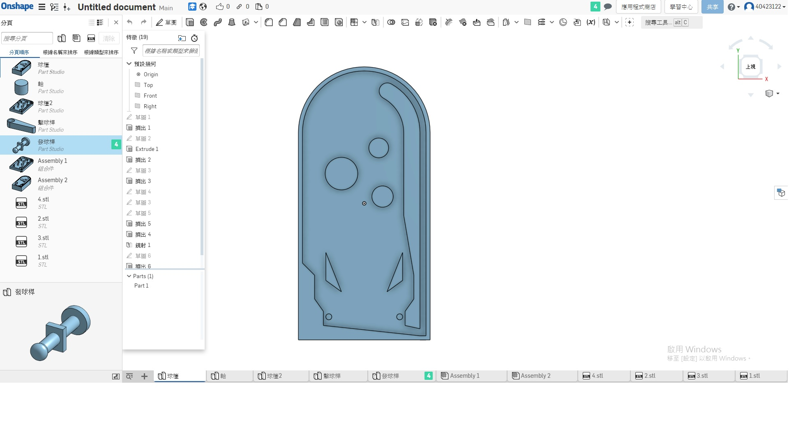

期末考週彈珠檯
onshape:
https://cad.onshape.com/documents/1c00aef3a8d081c3cabc0b69/w/ef1d9a2a0b3c25d6cd4c52ae/e/c284e1c17e1c7c138a990828
github issues:
https://github.com/mdekmol/cd2019a-task1-2019cda_t1_g6/issues/1
2019-6-17-11:57
老師好我是40423122四設四甲林國蓁
電腦的錄製軟體出了問題所以用手機替代錄影,第18週期末考,我和陳霖負責的是"球檯的繪製",途中遇到很多狀況,一開始的全班網路跑不動,而在老師修正後,在網路方面(onshape)還是有狀況,即使電腦沒有運行其他應用程式,還是非常的當,導致畫圖十分的不順利,修改一個尺寸就會當三分鐘,途中也有告知老師此問題,老師是說是個人電腦問題,但全班同學其實都有這個狀況,小組也有因此而拖延到後續操作時間
往後可能需要考慮是否將此電腦教室的部分設定在重開機後重置,否則很多學生下載了一堆無用的軟體,可能無形中損害電腦的使用效益和同學的權益.
而在vrep和程式方面還在努力中,先拍影片告知進度,圖檔付在個人網頁上
問題排除:
在繪製球檯本體的時候有發現一個問題,在剛開始設計的時候把擊球桿的軸也一起設計在球檯本體上,但是後來發現,在vrep要模擬的時候會無法操作,所以將擊球桿的軸,特地繪製另一軸之零件,而球檯本體則挖出一個洞可以組合擊球桿的軸,vrep才能順利作動
2019-6-20-00:21
製作出了pinball machine v-rep simulator,以下為操作影片
V-rep ttt 檔案:
https://drive.google.com/file/d/1zdIu07mhxdCVrpU4ZcnCn_MovFec96Yv/view?usp=sharing
程式:
import vrep
import sys, math
import keyboard
#導入vrep和sys,math,keyboard
vrep.simxFinish(-1)
clientID = vrep.simxStart('127.0.0.1', 19997, True, True, 5000, 5)
if clientID!= -1:
print("Connected to remote server")
else:
print('Connection not successful')
sys.exit('Could not connect')
KickBallV = 360
R_KickBallVel = (math.pi/180)*KickBallV
B_KickBallVel = -(math.pi/180)*KickBallV
errorCode,left_handle=vrep.simxGetObjectHandle(clientID,'left',vrep.simx_opmode_oneshot_wait)
errorCode,right_handle=vrep.simxGetObjectHandle(clientID,'right',vrep.simx_opmode_oneshot_wait)
errorCode,pull_handle=vrep.simxGetObjectHandle(clientID,'pull',vrep.simx_opmode_oneshot_wait)
vrep.simxSetJointTargetVelocity(clientID,left_handle,0,vrep.simx_opmode_oneshot_wait)
vrep.simxSetJointTargetVelocity(clientID,right_handle,0,vrep.simx_opmode_oneshot_wait)
vrep.simxSetJointTargetVelocity(clientID,pull_handle,0,vrep.simx_opmode_oneshot_wait)
#將vrep中的傳動left,right(左右桿的旋轉),和pull(打擊桿的拉伸)定義
def a1():
errorCode=vrep.simxSetJointTargetVelocity(clientID,left_handle,R_KickBallVel,vrep.simx_opmode_oneshot_wait)
def d1():
errorCode=vrep.simxSetJointTargetVelocity(clientID,right_handle,B_KickBallVel,vrep.simx_opmode_oneshot_wait)
def w1():
errorCode=vrep.simxSetJointTargetVelocity(clientID,pull_handle,1,vrep.simx_opmode_oneshot_wait)
#將旋轉和拉伸的速度定義
vrep.simxStartSimulation(clientID,vrep.simx_opmode_oneshot_wait)
while True:
try:
if keyboard.is_pressed('a'):
a1()
elif keyboard.is_pressed('l'):
d1()
else:
errorCode=vrep.simxSetJointTargetVelocity(clientID,left_handle,B_KickBallVel,vrep.simx_opmode_oneshot_wait)
errorCode=vrep.simxSetJointTargetVelocity(clientID,right_handle,R_KickBallVel,vrep.simx_opmode_oneshot_wait)
#在此定義按下按鍵"a",左邊搖桿執行動作,按下按鍵"l",右邊搖桿執行動作
if keyboard.is_pressed('up'):
w1()
else:
errorCode=vrep.simxSetJointTargetVelocity(clientID,pull_handle,-1,vrep.simx_opmode_oneshot_wait)
except:
break
#在這邊定義按下按鍵"上箭頭",拉深桿執行動作
問題排除:
因為這邊有用到keyboard的語法,如果沒有下載keyboard軟體是沒辦法使用的,會跑出錯誤,所以在需要設定按鍵操作之下,我們必須在執行視窗輸入:
(進入tmp)cd tmp
(下載keyboard軟體)pip install keyboard
下載完畢後重新開啟即可使用
結果統整:
本人繪圖零件和陳霖負責繪製球檯

其他零件
軸
擊球桿
發球桿
組和件
期末報告影片 << Previous